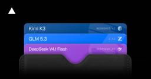
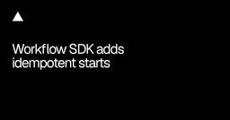
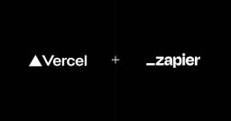
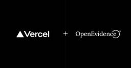
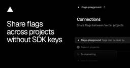
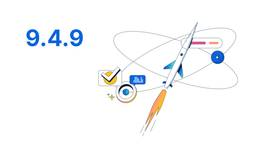

カテゴリを開くと、購読RSSと取得元を確認できます。
集約元カテゴリ
取得元RSS
英語記事の翻訳元カテゴリ
中国語記事の翻訳元カテゴリ
集計対象
通常・日本語訳・重複除外カテゴリの記事数
カテゴリ一覧
現在：Platform - Translated Japanese
企業のテックブログの更新をまとめたRSSフィードを配信しています
/feed https://fuhitonakagawa.github.io/my-tech-blog-rss-feed/rss/platform-jp/feeds/rss.xml
初回掲載順に通知し、元記事の公開日時を本文に表示します
https://fuhitonakagawa.github.io/my-tech-blog-rss-feed/rss/platform-jp/feeds/rss.xml





